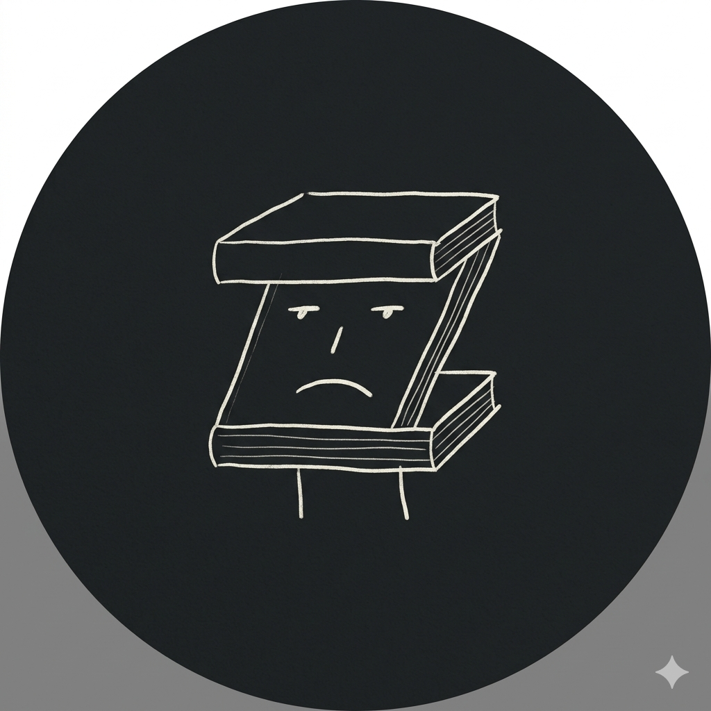

drygin-z

About
ZEN大学の社会人学生です。
幅広く色んな学びを得たいと思っています。
Profile
Zine / drygin-z
東京都
イラスト制作
Skills
OS
Windows
Skill, Software
Photoshop、Illustrator、Clip Studio
Works
これまでの活動内容
ゲーム会社勤務
マンガアシスタント
Contact
連絡先や SNS のアカウントを書きましょう。
Mail
X(旧 Twitter)
History
学歴
2025 年
ZEN大学 知能情報社会学部
入学
好きな動画
【うさぎ島】うさぎがクッキーを食べる音が気持ちよすぎる…癒しのもぐもぐASMR
Open Processing
X(旧 Twitter)
Posts by drygin_z